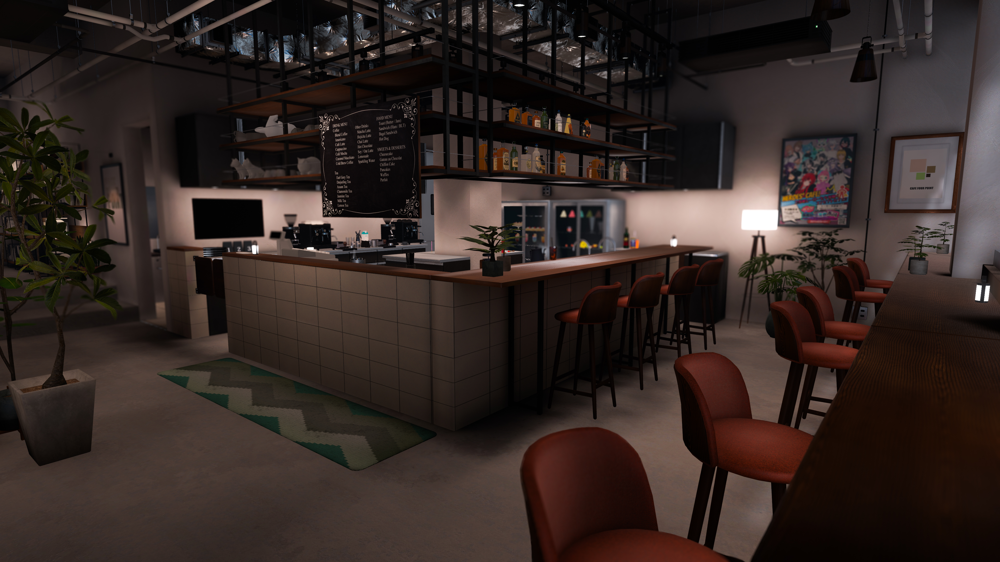

参加方法
事前にVRChatグループ「喋る猫カフェ -TALK CAT CAFE-」に参加申請をお送りください。
当日、お時間になりましたらグループインスタンスへご来店ください。
次回開催：お知らせをご確認ください

Guide
本イベントにご来店するにあたってのご案内です。
事前にVRChatグループ「喋る猫カフェ -TALK CAT CAFE-」に参加申請をお送りください。
当日、お時間になりましたらグループインスタンスへご来店ください。
参加者は、以下の条件を満たすものとします。
・VRChatグループ「喋る猫カフェ」に加入していること
・Udon Chipsを用いたイベント進行にご協力いただけること
・ご来店の際は、必ず人間のアバターでお越しいただくこと（カジュアルな私服等でのご来店を推奨します）
・使用アバターの容量が50MB以下であること
・PC環境であること（Quest,Androidは未対応です）
・VRChatの利用規約およびCommunity Guidelinesを遵守していること
別途、運営が入場に適さないと判断した場合は、入場をお断りする場合があります
以下に該当するアバターでのご来店は、お断りする場合がございますのでご了承ください。
・過度な露出
・派手な衣装
・義手義足の範疇を逸脱したサイボーグ要素
・獣人・動物・ケモノを強く想起させる要素（ケモミミ、尻尾等はOKです）
・欠損等のゴア表現
・版権および違法にパブリック化されたアバター
・ワールド全体に影響を及ぼすギミックを搭載されたアバター
・その他、運営が世界観を著しく損なうと判断したアバター
本イベントでは、以下の行為を禁止します。
・暴言、誹謗中傷、差別的発言その他他者を著しく不快にさせる言動
・性的な言動、露骨な性的表現、いわゆる下ネタ等の発言
・政治、宗教、特定の思想信条に関する主張や勧誘
・商業目的の宣伝、勧誘、物品販売
・過度な音量、フラッシュ、点滅等、視覚・聴覚に強い負荷をかける行為
・ワールドやアバターの不具合を意図的に利用した荒らし行為
・当たり判定やコライダーを利用した進路妨害、押し出し等の迷惑行為
・未成年者に対する不適切な発言・行為
・薬物や違法行為を助長、賛美する発言
・他の参加者またはスタッフへの執拗な接触、粘着行為
・出会い目的での接触
・イベント開催時間中のスタッフとのフレンド交換
・無銭飲食、注文を伴わない居座り
本規約に違反した場合、運営は状況に応じて以下の措置を取ることがあります。
・口頭での注意
・イベントからの一時退場
・イベントへの入場制限、出入り禁止（出禁）
重大な違反、または安全上緊急性が高いと運営が判断した場合は、事前の警告なく上記の措置を行うことがあります。
キック、BAN等の対応は、運営の判断により実施されます。
・本イベントはロールプレイを重視したカフェイベントです。世界観を尊重した言動にご協力ください。
・スタッフの業務の妨げとなる過度な要求はお控えください。
・スタッフとのツーショット撮影、グループ撮影、および撫でる等の接触行為は別途サービスとして提供しておりますので、必ず確認をお願いします。
・イベント内での撮影は周りに配慮いただきながら行ってください。
・イベント内での録画・配信は必ず事前に問い合わせを行ってください。
・他の参加者やスタッフが映り込む場合は、事前の配慮に努めてください。
・撮影データについても、公開の際は最大限の配慮をお願いします。
・他の参加者やスタッフに対し、現実の個人情報（本名、住所、連絡先等）を執拗に聞き出す行為を禁止します。
・スタッフや他の参加者のVRChatアカウントに関する非公開情報を、本人の許可なく公開しないでください。
・参加者間、または参加者とスタッフとの間でトラブルが発生した場合は、当事者間で解決を図ろうとせず、速やかにスタッフへご報告ください。
・スタッフからの案内、注意、誘導があった場合は、これに従っていただくようお願いします。
・参加者は、自身のVRChatアカウント、使用機器、通信環境等について、自己の責任で管理するものとします。
・参加者個人の判断によって発生したトラブルについて、運営がすべての責任を負うものではありません。
・本規約に定めのない事項については、参加者の安全およびイベントの円滑な運営を最優先として、運営が合理的に判断します。